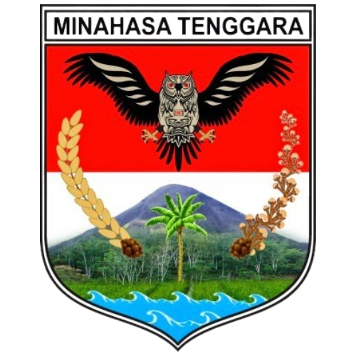

Alam Asri
Udara sejuk dan pemandangan hijau.
Kaya Sejarah
Nilai historis yang dijaga turun-temurun.
Tanah Subur
Hasil bumi melimpah kualitas unggul.
Udara sejuk dan pemandangan hijau.
Nilai historis yang dijaga turun-temurun.
Hasil bumi melimpah kualitas unggul.